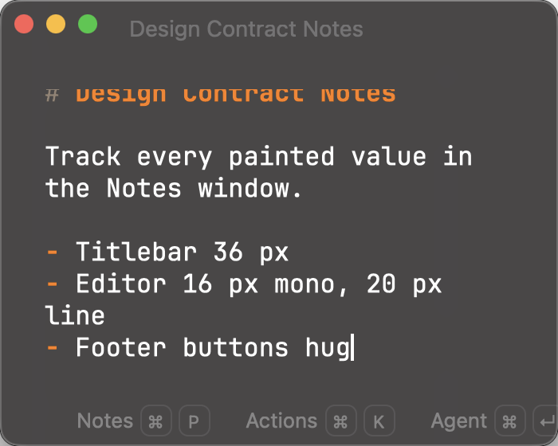

D toggles difference blend, Space blinks the reference. Material, native traffic lights, native window radius/shadow, heading-marker capture hue, and JetBrains Mono rasterization are known-divergence (non-blocking) — see known-divergence.json. Register: window content origin, titlebar bottom, editor text origin, the 20px line grid, and footer band top/bottom (32px) within ±1pt. All --sk-notes-* values are exporter-generated (design_contract notes section); markdown title/marker styles come from the resolved highlight theme.